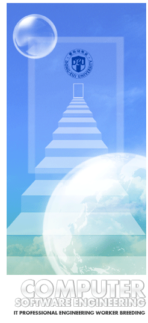

|  |
|
컴퓨터소프트웨어공학과는 지식정보화 사회의 핵심산업인
소프트웨어산업관련 최첨단 전문인력 양성을 위하여 2000년 3월 50명의
정원으로 컴퓨터응용공학부(총 신입생 230명)의 일원으로 신입생을
모집하였습니다.
컴퓨터소프트웨어공학과는 새로운 소프트웨어 프로그래밍 기법을
주도하고 있는 객체지향 프로그래밍과 관련하여 자바, 델파이 등
객체지향 언어를 포함하여 객체지향 소프트웨어 개발방법론,
객체지향 CASE Tool 등의 소프트웨어 개발환경, 소프트웨어
품질관리 및 유지보수, 소프트웨어 성능평가 등 기업에서 필요로 하는
매우 실질적인 소프트웨어 개발 트레이닝과정을 운영하고 있습니다.
또한 인터넷 기반관련 최첨단 기술로서 향후 미래산업의 중심이 될 것으로 예상되는 인터넷응용 분야를 위하여 인터넷 프로그래밍, 응용소프트웨어 등의 교육에 중점을 두고 있으며, 컴퓨터소프트웨어공학과는 하드웨어 관련 분야 및 텍스트(text), 그래픽(graphic), 사운드(sound), 오디오(audio), 비디오(video), 하이퍼미디어(hypermedia), 애니메이션(animation) 등으로 구현되는 미디어의 통합과 이의 전송기술 및 응용기술 등의 보완을 위하여 컴퓨터공학(전공), 멀티미디어공학(전공), 영화영상공학(전공)과의 교육과정 교류활동을 강화함으로서 시너지효과를 극대화하고 있습니다.
이와 같은 다양한 교육과정을 이수함으로서 소프트웨어 분야에서의 선진국과의 기술격차를 단시간 내에 줄이고 극복함으로써본 전공의 졸업생은 소프트웨어 산업이 미래산업의 중추적 역할을 담당하는 데 매우 커다란 역할을 할 것으로 예상하고 있습니다.
이러한 미래 첨단 교육과정을 이수한 졸업생들은 전자상거래, 인터넷 뱅킹, 멀티미디어, 인터넷 기반산업, 정보통신 관련 정부투자기관, 산업체 및 연구소, 각종 언론사, 금융기관, 멀티미디어 응용기술 관련 각종 산업체, 연구소, 벤처기업 등으로 진출할 수 있을 것입니다.
또한 1999년도에 신설된 일반대학원은 다양한 연구활동의 기회를 제공함으로서 소프트웨어 분야의 고급인력 양성교육을 담당할 예정이며, 또한 산업대학원과의 연계를 통하여 산업현장의 전문인력의 고급화를 추진하고 있으며 이를 기반으로하여 보다 실질적인 산학협동을 할 수 있는 기회를 제공할 계획입니다. |